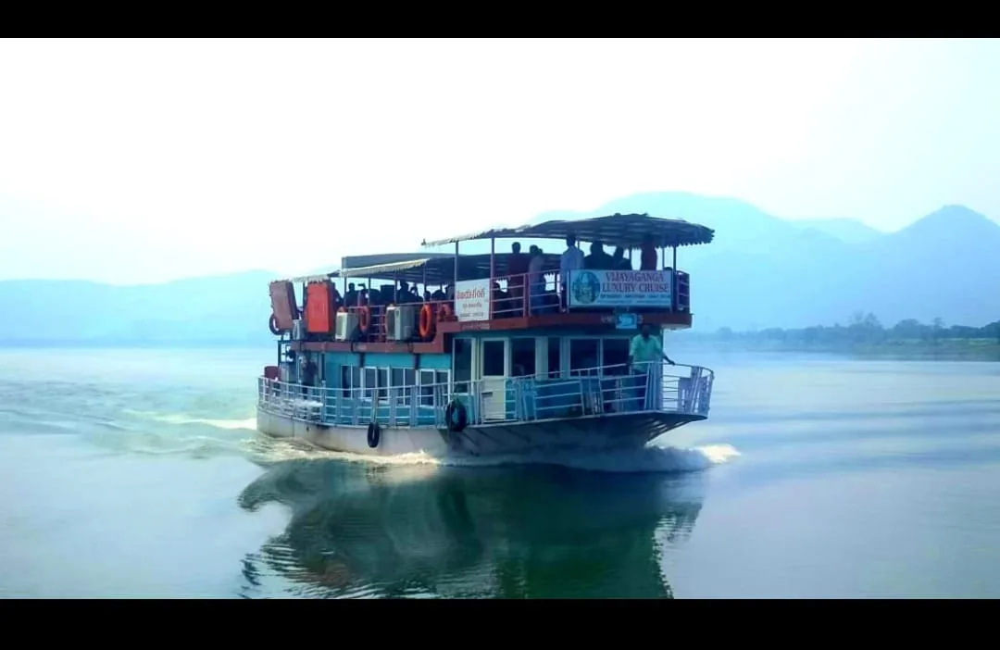

Papikondalu & Maredumilli Tourism from Rajahmundry
River cruises, forest escapes, waterfalls, viewpoints, temple visits and curated day or overnight tours from Rajahmundry.
- Papikondalu Godavari river cruises
- Maredumilli forests & waterfalls
- Temple, nature & family packages
- Day trips and overnight stays
Godavari cruise
Forest & waterfalls
Package dependent
Package dependent
Travel planning that feels organised from the first call.
River cruises, forest escapes, waterfalls, viewpoints, temple visits and curated day or overnight tours from Rajahmundry.
Our local travel team helps families, groups, pilgrims and business travellers coordinate the practical side of the journey. Tell us your route, date and group size and we can guide you to the right service.
Clear booking details
Service scope, route and important trip details are explained before confirmation.
Local assistance
Phone and WhatsApp support for practical travel questions around Rajahmundry.
Papikondalu & Bhadrachalam Tours
Current package details and prices supplied by Madhu Travels. Please confirm availability and departure arrangements before booking.
Papikondalu 1 Day Tour
Places covered
- Gandipochamma Temple
- Papikondalu Hills
- Perantapalli Ashramam & Veereswara Swamy Temple
- Polavaram Project Area, Devipatnam, Koruturu & Sirivaka
Price
per child

Papikondalu Night Stay
Price
per child (3–10 yrs)
Highlights
- Godavari boat journey through Papikondalu
- Forest trekking & water canal experience
- Evening snacks, dinner, accommodation and campfire
- Polavaram Project Area & Devipatnam views

Bhadrachalam 1 Day Package
Price
per child
Visiting places
- Pattiseema
- Polavaram Project
- Gandhi Posamma Temple
- Papikondalu
- Perantapalli Temple
- Bhadrachalam Temple
Bhadrachalam River cum Road
Price
per child (3–10 yrs)
Highlights
- Luxury boat journey through Papikondalu
- Bhadrachalam Temple & Parnasala
- Maddi Anjaneya Swamy & Dwaraka Tirumala
- Road transfer from Pochavaram to Bhadrachalam
Papikondalu Tour Schedule
7:30 AM
Road journey to Gandipochamma Temple Revu for boat check-in.
9:00 AM
Breakfast in the boat, followed by Gandipochamma Temple darshan and the Godavari journey.
1:00 PM
Vegetarian lunch served in the boat while cruising through the river.
2:00 PM
Reach Papikondalu and enjoy the scenic beauty of the hills.
3:00 PM
Visit Perantapalli village, Ramakrishna Muni Vatika and Veereswara Swamy Temple.
3:30 PM onwards
Return boat journey to Pattiseema, Polavaram or Purushothapatnam Revu, followed by road journey to Rajamahendravaram.
7:30 PM
Expected arrival in Rajamahendravaram.
Bhadrachalam 1-Day Tour Schedule
7:00 AM
Tour starts every day from Rajamahendravaram.
Morning
Visit Polavaram Project, Gandhi Posamma Temple, Papikondalu and Perantapalli Temple.
Meals
Breakfast and vegetarian lunch are provided in the boat.
3:00 PM
A/C boat transfer is shifted at Perantapalli; continue from Perantapalli to Pochavaram by non-A/C boat for about 1 hour.
After Pochavaram
Travel approximately 2 hours by road to Bhadrachalam in the arranged vehicles.
6:00 PM
Expected arrival at Bhadrachalam Temple. The client information states temple darshan closing time as 8:30 PM.
Papikondalu Night Stay Schedule
Day 1
- 7:30 AM pickup from Rajamahendravaram Railway Station.
- 9:00 AM boat check-in and breakfast.
- Boat journey via Devipatnam with police check-up.
- 1:00 PM vegetarian lunch in the boat.
- 2:00 PM Papikondalu scenic cruise.
- 3:00 PM Perantapalli tribal village, ashram and Veereswara Swamy Temple.
- 4:30 PM arrival at Koruturu camp; evening snacks, dinner, accommodation and campfire.
Day 2
- Early morning forest trekking and water-canal experience.
- 9:00 AM breakfast and local sightseeing.
- 1:00 PM vegetarian or non-vegetarian lunch.
- 2:00 PM boat pickup for return journey.
- 5:30 PM reach Gandirevu, followed by road journey.
- 7:00 PM approximately reach Rajamahendravaram.
- Optional Bhadrachalam drop: ₹150 extra per person.
Bhadrachalam 2-Day Tour Schedule
Day 1
- 7:30–8:30 AM road journey from Rajamahendravaram to Gandipochamma Temple Revu.
- 9:00 AM breakfast in the luxury boat and river journey after temple darshan.
- 11:00 AM cruise via Devipatnam and view the historic old police station area.
- 1:00 PM vegetarian lunch in the boat.
- 2:00 PM Papikondalu scenic cruise.
- 3:00 PM Perantapalli village, Ramakrishna Muni Vatika and Veereswara Swamy Temple.
- 3:30 PM tribal boat journey; 4:30 PM Pochavaram arrival and transfer by non-A/C vehicle.
- 6:30 PM Bhadrachalam arrival, room allotment and vegetarian dinner.
Day 2
- 5:30 AM Bhadrachalam Temple darshan.
- 6:30 AM road journey to Parnasala; darshan and local sightseeing.
- 8:30 AM return to Bhadrachalam; 9:30 AM breakfast and room check-out.
- 10:00 AM journey to Jangareddigudem via Kukunoor and Ashwaraopeta.
- 1:00 PM vegetarian lunch at Jangareddigudem.
- 2:30 PM Maddi village and Sri Anjaneya Swamy darshan.
- 4:30 PM Dwaraka Tirumala darshan.
- 5:30 PM evening snacks with tea; 6:30 PM road journey to Rajamahendravaram.
- 8:30 PM expected arrival in Rajamahendravaram.
Papikondalu, in pictures

{kind=link}
{kind=link}
{kind=link}
{kind=link}
Nature, waterfalls & forest views
A two-day Maredumilli getaway covering temples, waterfalls, forest viewpoints, coffee plantations and local nature spots, with meals and resort accommodation included.
per child (5–10 years)
- Morning breakfast and scheduled meals
- Resort accommodation
- Waterfalls, forest and viewpoint sightseeing
- Complimentary chicken with dinner and selected meals as specified
Maredumilli & surrounding highlights
Korukonda
Lakshmi Narasimha Swamy Temple.
Waterfalls
Rampa Waterfalls, Pamuleru Waterfalls and Jalatharangini Waterfalls.
Forest & Coffee
Maredumilli Forest and coffee plantations.
Viewpoints
Manyam Viewpoint and Nandhanavanam nature stops.
Day-by-day itinerary
DAY 1
- 07:30 AM pickup at Rajahmundry with morning breakfast.
- 10:30 AM visit Sitapalli Bhapanamma Temple for darshan.
- 11:30 AM reach Rampa Waterfalls.
- 12:30 PM veg meals or chicken fry piece biryani.
- 2:00 PM reach Maredumilli Resorts and check in.
- 7:30 PM veg dinner with complimentary chicken.
DAY 2
- 8:00 AM morning breakfast.
- 9:30 AM cottage check-out.
- 10:00 AM visit Nandhanavanam, coffee plantations and Manyam Viewpoint.
- Continue to Pamuleru Waterfalls and Jalatharangini Waterfalls.
- 1:30 PM veg meals or Bamboo Biryani with complimentary Bamboo Chicken.
- 5:00 PM reach Rajahmundry.
{kind=link}
{kind=link}
{kind=link}
{kind=link}
{kind=link}
{kind=link}
{kind=link}